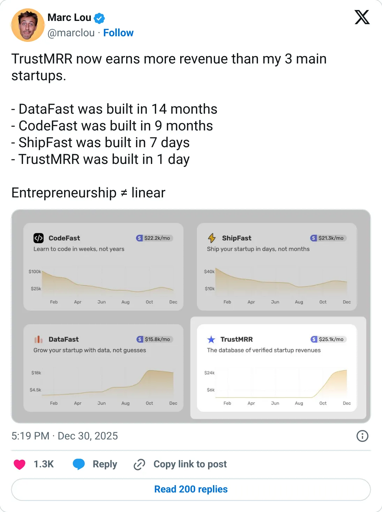
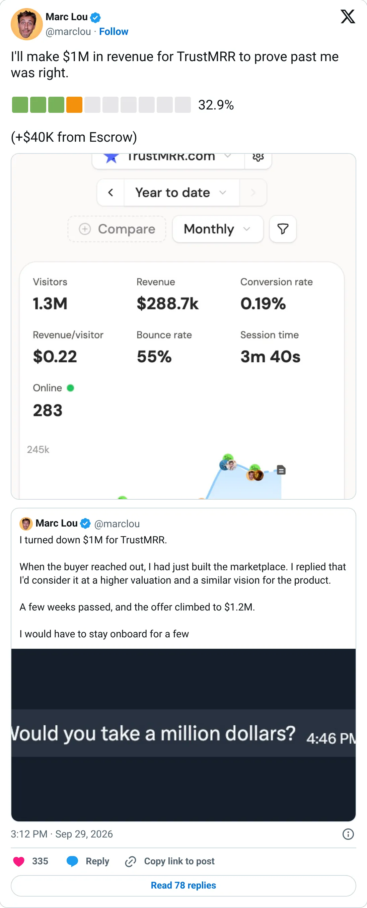

Not a pick
TrustMRR
A real-looking company with a headline you should not plan against.
$47,200 last 30 days · $23,234 MRR
Should you build this
The company may be real. The figure on the card is a peak, a stale year, a cash month, or an average. TrustMRR is dogfooded: Stripe is connected, and both numbers are on the page. MRR is $23,234. Last 30 days is $47,200. September was $53K. All-time is $374,798. This is a directory plus a marketplace for buying startups, so a large share of the cash is one-time, not recurring. Leading with the bigger cash number, and storing $47,200 as the monthly rank, makes a lumpy marketplace look like a $47K MRR SaaS. The data is real. The label is the dress-up.
Cited from the captured posts, shown below: the earliest captured post (Dec 30, 2025) is the source for “"Built in 1 day, now earns more than my 3 main startups"”; the latest milestone (Sep 29, 2026).
Posts this is based on

"Built in 1 day, now earns more than my 3 main startups"
Open on X

Open on X
What the product is
Database of startups with verified revenue (Stripe/Paddle API) and a marketplace for buying and selling them.